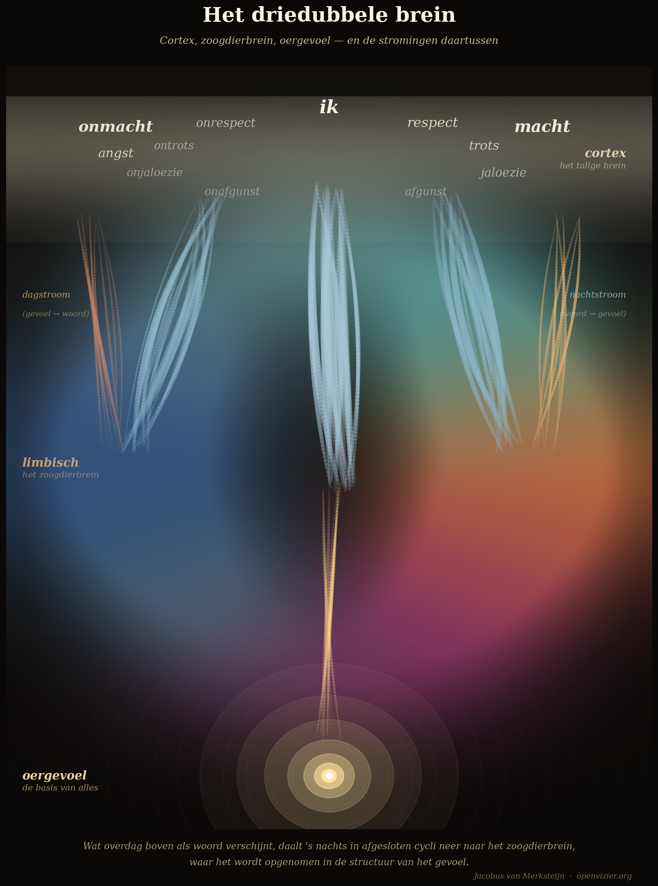

Якобус ван Меркстейн
Есть опыт, который знаком почти каждому, но который большинство людей не умеют объяснить. Ты интенсивно изучаешь что-то — математическую задачу, сложную ситуацию, вопрос, который не отпускает. Днём ответа нет. Ты засыпаешь. Наутро решение есть. Не как сознательный процесс рассуждения, а как присутствующее знание, которого раньше не было.
Об этом писали поэты. Учёные приписывали этому свои прорывы. Кекуле увидел кольцевую структуру бензола во сне. Менделеев увидел свою периодическую систему в дремоте. Пуанкаре описывал, как озарение накрыло его в момент, когда он садился в экипаж, — после недель бесплодного сознательного труда.
Расхожее объяснение гласит, что мозг «продолжает работать в фоновом режиме». Это не объяснение. Это повторение наблюдения другими словами. Настоящий вопрос: что именно делает мозг и почему это работает именно так?
Ответ начинается с архитектуры.
Три слоя, три функции

Человеческий мозг — не единое целое. Это слоистая структура, выстроенная в ходе эволюции слой за слоем, один поверх другого, которая в повседневном функционировании действует как единое целое — но не всегда является таковым.
Нижний слой — самая древняя часть: ствол мозга и структуры, совпадающие с тем, что нейробиолог Пол Маклин назвал «мозгом рептилий». Базальные ганглии, миндалина, структуры, которые мы разделяем с рептилиями и ранними млекопитающими. Здесь располагается первочувство: прямое, долингвальное восприятие реальности. Никаких слов, никаких категорий, никаких аргументов. Распознавание паттернов. Прямой отклик на ситуацию. Быстрее, чем сознательная мысль успеет порассуждать.
Средний слой — лимбическая система, мозг млекопитающего. Здесь живут чувства как цвет и интенсивность: терракота власти, глубокий синий бессилия, пурпур злорадной зависти. Никаких ярлыков — потому что в лимбическом слое чувства просто есть. Они имеют вес и направление. Но ещё не заключены в предложение. Этот слой мы разделяем со всеми млекопитающими, ходившими по земле до нас, — от волков до слонов и дельфинов.
Верхний слой — неокора, языковой мозг, человеческий мозг. Великая машина обработки языка. Кора даёт имена. Она категоризирует. Она говорит. «Это зависть.» «Это страх.» «Это любовь.» Именование полезно, но это и редукция: чувство втискивается в категорию, а категория всегда слишком тесна для реального переживания. Кора много производит. Она не всегда понимает, что производит.
Три слоя, три функции: древний слой читает напрямую, лимбический слой окрашивает и перерабатывает, кора называет и говорит. Когда все три работают сообща — когда древний слой передаёт своё прямое считывание, лимбический углубляет его до прочувствованного паттерна, а кора наконец находит для этого слова — тогда человек функционирует в полную силу. Он знает, что чувствует, чувствует, что знает, и может об этом говорить.
Но есть движение, которое почти никто не объясняет — и которое меняет всё.
Дневной поток
Дневной поток идёт вверх: от лимбической системы к коре. Чувство — напряжение, цвет, интенсивность — поднимается из лимбического слоя и ищет слова в коре. «Это зависть.» «Это чувство, что я не туда.» «Это неудобство от ситуации, которая не так.»
Именование полезно. Оно освещает кору. Делает обсуждаемым то, что раньше было только ощущаемым. Но дневной поток — не конец истории. Потому что то, что кора получает снизу и облекает в слова, — этим ещё не переработано. Это названо. Это разные вещи.
Когда дневной поток блокируется — когда чувства больше не достигают коры или когда кора отказывается принимать то, что идёт снизу, — возникает то, что я называю выученным лосом: чувство есть, в лимбическом слое, но кора научилась его отставлять. «Не будь таким чувствительным.» «Это тебе только кажется.» «Можешь обосновать?» Десятилетия таких фраз производят человека, который больше не слышит собственную эмоциональную жизнь. Кора победила. И она не только переписала чувство — она верит в собственную перезапись.
Это самое распространённое психологическое расстройство нашего времени, у которого нет названия в DSM.
Ночной поток
Ночной поток идёт вниз: от коры к лимбической системе. Вот что происходит ночью. Вот в чём ключ.
Во время REM-сна — фазы с быстрыми движениями глаз, яркими снами, наиболее интенсивной нейронной обработкой — все внешние потоки ввода фактически отрезаны. Тело обездвижено мышечным параличом, чтобы двигательные сигналы из сна не были выполнены. Кора не может получать новую информацию извне. Она предоставлена самой себе.
В этом закрытом состоянии начинается настоящая переработка. Переживания дня воспроизводятся заново, сортируются, взвешиваются. Кора сравнивает новый материал с существующими паттернами в более глубоких структурах. Там, где возникает напряжение между новым и существующим, напряжение разрешается. Результат: то, что днём присутствовало как слово, ночью интегрируется в существующий паттерн ощущения. Знание опускается вниз.
Вот это движение и знал Кекуле. Не кольцо бензола как сознательное рассуждение — кольцо как паттерн, который ночью, в нисходящем потоке, нашёл своё место в глубокой структуре ощущения. И утром, когда кора снова включилась, присутствовал как знание, которого прежде не было.
Я описываю это как «отливку вниз в закрытых фазах»: кора ночью отливает свой материал в лимбическую систему, в цикле, защищённом от новых внешних вводов. То, что днём возникало наверху как слово, ночью опускается как чувство. Знание становится мудростью. Информация становится ощущением.
Есть и третий поток: первопоток, идущий от первочувства к лимбическому слою. Это непрерывный фоновый поток. Первочувство читает беспрестанно — оно всегда активно, всегда регистрирует. Информация поднимается как постоянная подземная река. Когда ты входишь в комнату и чувствуешь, что что-то не так — не умея назвать это, не восприняв ничего конкретного, — это первопоток достиг лимбического слоя, но ещё не достиг коры.
Почему одного понимания недостаточно
Вот практическое следствие, которое почти все психотерапевтические школы упускают или недооценивают.
Есть два качественно разных типа знания. Корковое знание: знание, которое можно высказать, аргументировать, отстоять. Знание, сдающее экзамены, пишущее статьи, удерживающееся в разговоре. И лимбическое знание: знание, которое нельзя объяснить, но которое управляет твоим компасом, которое ты прямо чувствуешь в ситуациях, которое защищает тебя от опасности и ведёт к возможностям.
REM-сон — это мост, преобразующий первое во второе.
Когда человек чему-то действительно научился — не как корковому факту, а как эмоциональному паттерну, — это всегда происходит после периода переработки, сна, ночного осаждения. Это разница между человеком, который прочитал книгу о плавании, и человеком, который научился плавать. Оба имеют знание. Но второй позволил знанию опуститься в структуру своего тела, своей лимбической системы, своего первочувства. Он умеет плавать.
Это объясняет феномен, который терапевты знают, но редко честно называют: люди, годами ходящие на терапию, многое понимающие о себе, — но мало что меняется по-настоящему. Они приобрели корковое знание. Они знают, что их страх уходит корнями в то, что происходило в раннем детстве. Знают, как выглядят их паттерны. Могут объяснить. Но паттерны остаются. Поведение не меняется.
Это не провал терапевта или пациента. Это следствие системы, работающей преимущественно через кору — через слова, через озарения, через разговор, — и тем самым обслуживающей слой с наименьшей силой изменения. Кора называет. Изменение находится ниже, в лимбическом слое, а туда через слова не добраться. К нему приходят через ночной поток — через ночное осаждение переживаний, которые были получены днём и получили шанс опуститься.
Хорошая терапия способствует этому отливанию. Телесно-ориентированные подходы, ритуальное повторение, художественные вмешательства, напрямую затрагивающие лимбический слой через цвет, ритм, мелодию, движение — всё это работает на слое, где реально находится изменение. И сон — сон достаточного качества и продолжительности — это самый недооценённый инструмент терапии и саморазвития из всех, что существуют. Нехватка сна не просто вредна для здоровья. Она препятствует отливанию. Знание остаётся наверху — летучее, незакреплённое. Человек не мудреет от своих переживаний.
Картина как иллюстрация
Есть картина, изображающая три слоя мозга способом, превосходящим слова. Я заказал её как иллюстрацию к теоретической работе и ссылаюсь на неё здесь как на визуальный якорь для тех, кто хочет понять модель не только через слова.
На картине первочувство предстаёт как интенсивная световая точка глубоко внизу, окружённая кольцами мягкого свечения, распространяющимися во все стороны. Лимбический слой изображён большими, перетекающими друг в друга полями цвета: терракота для власти, синева для уважения, глубокий синий для бессилия, пурпур для злорадной зависти. Никаких подписей — потому что в лимбическом слое чувства есть без слов. Кора — тонкая полоска сверху, в которой пульсируют слова: уважение, зависть, гордость, власть, страх. Кора называет. Она самый светлый слой, самый летучий.
Между слоями пролегают потоки. Вверх — дневной поток, восхождение чувства к слову. Вниз — ночной поток, нисходящая переработка в закрытых фазах. И как непрерывный несущий поток — первопоток, поднимающийся из самой глубокой световой точки как подземная река, которая никогда не иссякает.
Модель не мистична. Это архитектура. Кто понимает архитектуру, понимает и то, отчего утром просыпается, зная то, чего вечером ещё не знал.
Урок для образования
Система образования, перегружающая детей активностью и лишающая их тишины и сна, необходимых для настоящего учения, настраивает их как машины, которые выдают результаты, но не становятся мудрее. Корковый материал накапливается. Ночной поток не успевает его переработать — слишком мало сна, сон нарушен экранами, тишина, защищающая отливание, систематически отсутствует.
Результат — дети, много знающие и мало чувствующие. Показывающие высокие баллы на тестах и потерявшие свой компас. Извлекающие фактические знания, но не знающие, что с ними делать. Приходящие в университет в восемнадцать лет с впечатляющим когнитивным аппаратом и совершенно не укоренённой внутренней жизнью.
Образование, принимающее три слоя мозга всерьёз, делает обратное: защищает древний слой, питает лимбический слой через истории, движение, природу и тишину и предлагает коре её слова лишь тогда, когда есть на что этим словам опереться. Знание, предлагаемое пустому лимбическому слою, быстро высыхает. Знание, оседающее на богатой эмоциональной почве, становится мудростью.
Вот разница между системой образования, которая ищет кратчайший путь к диплому, и системой учения, идущей длиннейшим путём к человеческой жизни.
Для тех, кто хочет читать дальше: полная разработка трёх слоёв мозга, дневного и ночного потоков, REM-сна как нейронной техники обучения и трёх типов лос-форм содержится в работе Мыслительная база для 7-мерной модели чувств. Педагогические следствия — как выглядит учебный день, если ночной поток воспринимается всерьёз — изложены в Манифесте об образовании и воспитании. Оба произведения доступны для скачивания на openvizier.org.